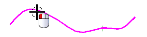
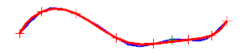

您可以光顺开放样条 — 可以是整条样条或者样条中根据定义点的一个样条段。
返回到编辑曲线参数 (原有)对话框，并选择上方的样条。

在编辑样条对话框中，点击光顺。
光顺样条对话框出现，注意光顺命令现在不可用。
当样条被光顺时，某些点将处在公差值上，要终止这些点，样条将被分为许多段，那些点将成为这些分段的端点。原来的分段由样条中的段数决定，这些分段是等弧长的，这样的分段不是真实的样条分段，分段可以以后改变。
从源曲线列表中，选择当前。
点击逼近以接受分段数目。
曲线现在更加光顺。

现在，您可以光顺整段样条或在特定点上的样条。
|
提示 |
光顺通常使用在光顺过程的开始，您可以通过光顺个别点来让样条更加光顺。 |
点击光顺。
分段末端的点不会移动大于阈值的值，光顺后曲线阶次为5。
点击取消。
关闭所有部件。